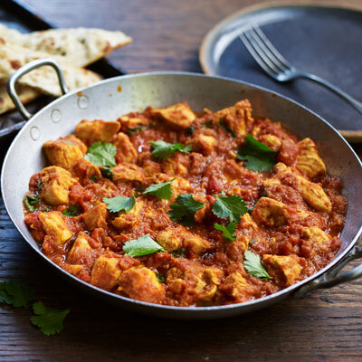

Chicken Madras

This hearty, spicy tomato-based curry is a classic from South India. Perfect for a winter warmer, especially if you like your curries hot.
Serves 4 | Takes 50 mins
Original recipe: https://www.pataks.co.uk/recipes/chicken-madras